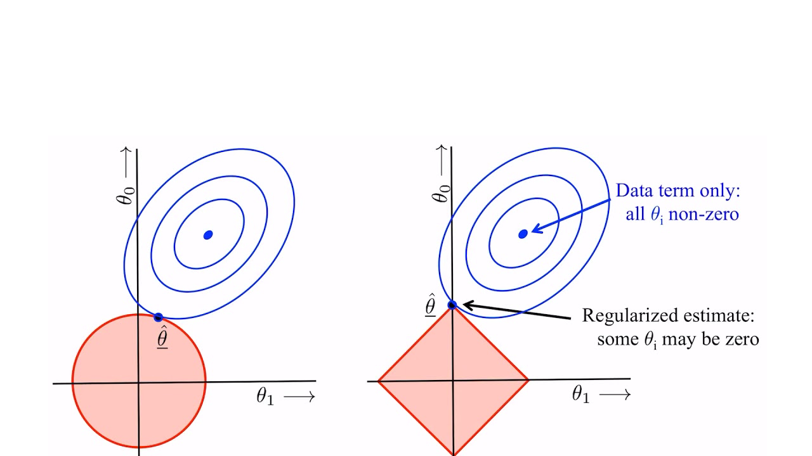

2022-12-27
Last update date
2023-01-05
Multilayer Perceptrons (MLP) (ch5 en)
像在 softmax regression 一樣, 在 linear 後接一個非 linear function \(\sigma.\)
希望模仿神經學的神經傳導.

Overfitting (3.6.2 en)
MLP 只要參數足夠多, 一定能逼近 \(f_{\mathtt{real}}.\)
幾乎都會造成 overfitting.
不必要的曲折太多.


解決方式:
K-Fold Cross-Validation
Dropout (5.6 en)
- 跟 K-Fold Cross-Validation 一樣是取平均概念.
Regularization (3.7 en, 4.4.4 zh)
- 限制優化的範圍.
Dropout (5.6 en)
Overfitting 的原因來自 \(\mathtt{Net}(x)\) 太過曲折.
- 太多 activation functions 都起作用.
解決方式: 在訓練時, 每代入任意 \(x,\) 每個 hidden layers 都用 \(p\) 機率丟掉.
For each hidden layer \(h,\) we use the new hidden layer \(h'\) by \[ \begin{aligned} h' = \frac{1}{1-p} 1_{D_h} h, \end{aligned} \] where \(\lbrace D_h\rbrace_h\) are independent with \(\mathbf{P}[D_h]=1-p.\)
- \(\mathbf E[h'] = h.\)

Dropout = average

\(\ell_1\) regularization vs \(\ell_2\) regularization
ridge regression (\(\ell_2\)): \(\left\lVert \theta \right\rVert = \big\lVert (\theta_1,\cdots,\theta_n) \big\rVert_2^2= \sum_{i=1}^n \left\lvert \theta_i \right\rvert^2 .\)
lasso regression (\(\ell_1\)): \(\left\lVert \theta \right\rVert = \big\lVert (\theta_1,\cdots,\theta_n) \big\rVert_1=\sum_{i=1}^n \bigl\lvert \theta_i \bigr\rvert.\)



\(\ell_1\): Concentrate weights on a small set of features by clearing the other weights to zero.
- An effective method for feature selection.
\(\ell_2\): Distribute weight evenly across a larger number of features.